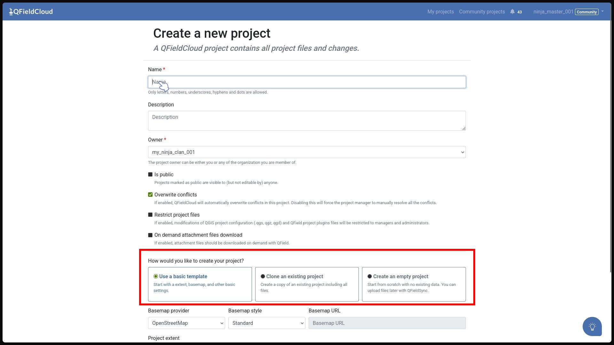
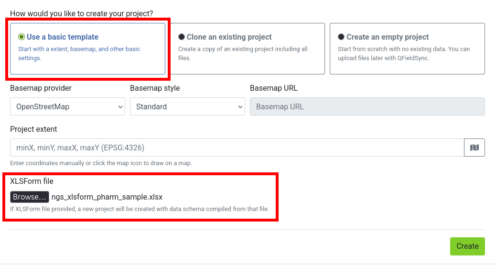

Creating Projects in QFieldCloud¶
There are multiple options available to initialize and build a project in QFieldCloud:
Creating Projects¶
Option 1: Initialize via Web UI (Blank or Basemap Template)¶
Web Interface
You can provision empty map spaces or simple localized maps directly from the QFieldCloud, downloading them to your desktop environment for further styling later.
Flux
- Direct to your QFieldCloud landing page.
-
Click the Create project button.
-
Set the project name, descriptive details (optional), visibility scope (public or private), conflict resolution parameters, and project file safety restrictions.
-
Pick your initialization template configuration:
- Create an empty project: Sets up a clean project folder environment without a basemap.
- Use a basic template: Allows you to bundle a built-in background layer (OpenStreetMap Standard by default, or a custom tile server URL) and customize your target workspace boundaries by selecting a coordinates bounding box via the Project extent map window.

-
Click Create at the bottom right. The completed skeleton will populate on your profile's project overview files.
{kind=link}
Option 2: Create from an XLSForm Spreadsheet (Web UI Upload)¶
Web Interface
For deployment workflows relying on spreadsheets for form configuration, QFieldCloud can compile tabular data collection forms directly into complete QGIS projects containing relational data schemas.
Note
Supported File Types: QFieldCloud supports forms designed using standard tabular spreadsheet files, accepting .xls, .xlsx, .xlsb, .xlsm, and .ods file extension validation.
Flux
- Click on Create project from your QFieldCloud landing page.
- Complete the project metadata fields (Name, Extent) and click Create.
- Chose "Use a basic template" option, and locate the XLSForm file upload input.
- Choose your spreadsheet template file and press the Create button.
QFieldCloud will process the form so that you end up with a fully functioning Survey layer with the corresponding survey configurations (drop-down lists, radio buttons, manual text edit).

{kind=link}
Important
If the submitted spreadsheet contains structural syntax errors or broken expression references, the background creation job will automatically safe-abort to prevent corruption.
The project generation status will display an UNABLE_TO_CONTINUE error code on the Job log, exposing the cause of error on the output logs explaining which row or element caused the compilation failure.
Option 3: Clone an Existing Project¶
Web Interface
Project cloning allows you to duplicate existing active setups to act as templates for alternative workspace regions, distinct fieldwork teams, or new seasonal collection campaigns.
How Cloning Works¶
Cloning creates an isolated, completely independent project space, cleanly replicating:
- The base QGIS mapping project file (.qgs or .qgz).
- All bundled offline layers and databases (GeoPackages, styles, .etc).
- System execution policies (offline editing conflict rule settings, attachment on-demand configurations).
Flux
- On the QFieldCloud landing page, click the actions context menu icon (⋮) next to the project profile you want to duplicate.
- Select the Clone Project option.
- Choose a unique name and pick the target owner profile space (Personal or Organization).
- Define a custom bounding box coordinate set inside the Project extent setting parameters to update the map's initial zoom area focus.
- Click Create to start the cloning.
Overriding Project Parameters¶
While cloning effectively duplicates the source project, you can override specific parameters during the creation process:
- Project Name: You must provide a unique name for the new cloned project (e.g.,
survey_zone_b,survey_zone_n). - Owner: You can assign the cloned project to a different owner (e.g., a specific organization or user account), with the appropriate permissions.
- Extent: By providing new extent for the cloned project (for easy moving the zoom to the new extend zone).
Constraints and Limitations¶
To ensure system stability and security, project cloning is subject to the following technical rules:
- Permissions: You must have admin, manager role to the source project to be able to clone it.
- Storage availability: The target owner account must have enough free storage available to accommodate the entire file size of the source project. If the storage limit is exceeded, the clone operation will fail.
- Seed Configuration: When cloning, you cannot configure new basemaps via the project seed. The seed data is strictly limited to updating the project's
extent. - Shared Datasets: The system-level
shared_datasetsproject cannot be used as a source for cloning. Attempting to clone it will raise aNotCloneableProjectError.
API Usage¶
You can easily clone projects using the QFieldCloud API. To clone a project, send a POST request to the /api/v1/projects/ endpoint.
Include the clone_from_project parameter with the UUID of the source project.
curl --location 'https://app.qfield.cloud/api/v1/projects/' \
--header 'Content-Type: application/json' \
--header 'Authorization: Token {MY_TOKEN}' \
--data '{
"name" : "cloned-fieldwork-zone-b",
"is_public": false,
"description": "Duplicated configuration tracking layer for Team B",
"owner": "{USERNAME}",
"seed": {
"extent": "-180, -90, 180, 90"
},
"clone_from_project": "{PROJECT_UUID}"
}'
Note
The seed object is optional and only accepts the extent field when utilizing the clone functionality.
Option 4: Change the Ownership of a Project¶
Web Interface
If you have already built a personal project on the cloud and need to transfer the ownership to a different user or organization, you can change the project ownership directly under the project's settings page.
Flux
- Open the project overview via the web page and select the Settings menu.
- Scroll to the actions zone and select "Transfer ownership of this project".
- Select your target organization destination from the lookup selection drop-down.
- Type the requested text confirmation exactly as written into the confirmation popup dialog box and click Transfer project.